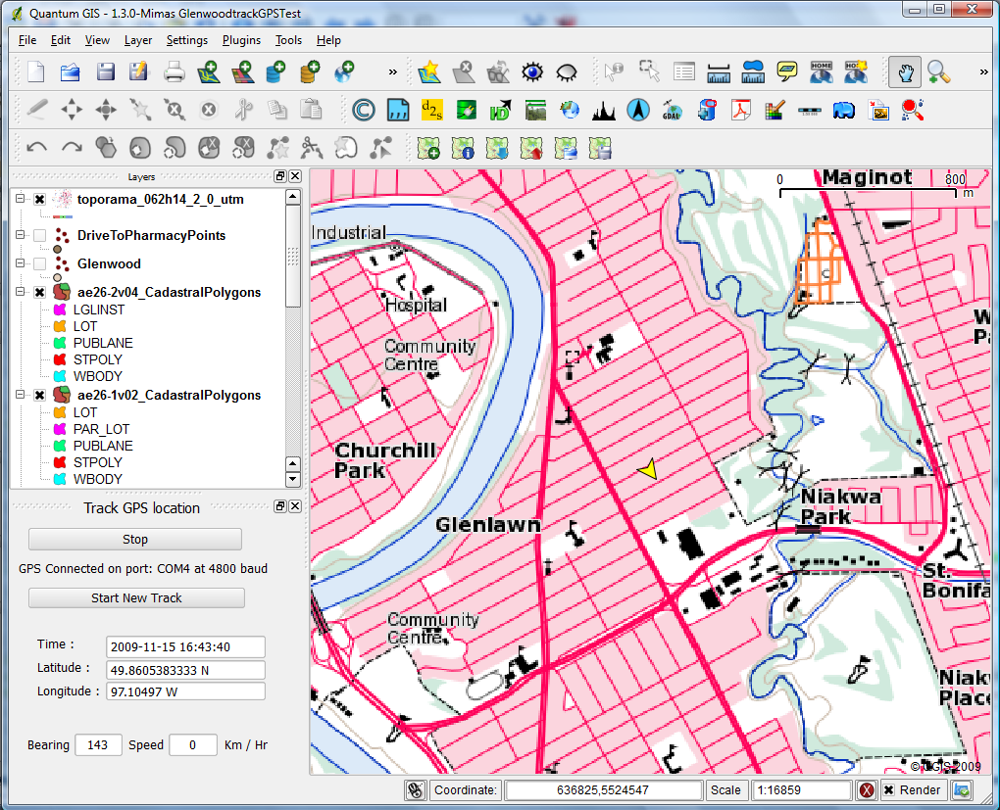
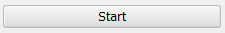
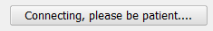
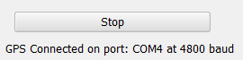
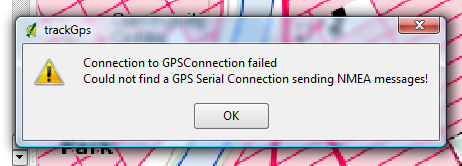
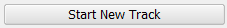
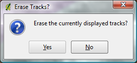
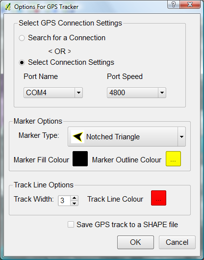
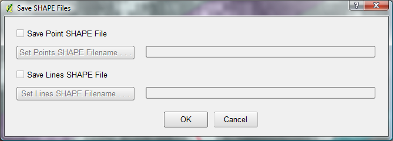
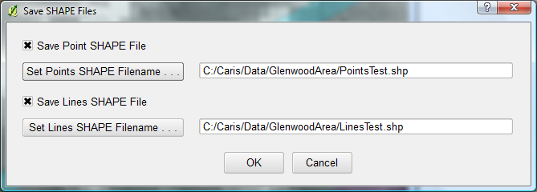

Using the QGIS GPS
Tracker Plugin
Introduction
Getting Started
Operating the Plugin
Setting Options
Saving Data
Technical Notes
Introduction
This is a basic
GPS Python Plugin for QGIS. It allows the
user to use a GPS device that is
emitting
NMEA messages and that is connected
to a serial port to display the current position on the QGIS map canvas
and to show the route on the map
canvas that is traced by the moving
GPS receiver. The map canvas is continuously centered on the GPS
position. The
user may choose to save the recorded positions to points and/or lines
SHAPE files if this option is selected. As
of 2009-11-15 this plugin only works on Windows platforms, the
implementation of it on Linux
platforms is planned for the future. For a more advanced GPS plugin the
reader should try the gpsmapper plugin at:
http://code.google.com/p/qgismapper/. Another plugin to try is the
QGisTrackGps
plugin
at: http://kubuntu.free.fr/wiki/?page=QGisTrackGps . Some of these
plugins may only work on Linux systems. This plugin was actually
developed using the QGisTrackGps plugin as a starting point.
The next graphic shows the plugin in operation in QGIS Mimas 1.3.0:

The plugin display
is shown on the left side below the legend. The connection information
is shown along with the time, position, bearing and speed. The position
is always shown as WGS84 latitudes and longitudes. A yellow notched
triangle marks the current position. The base map is the 62H14 1:50,000
GeoTiff image available for free from the Government of Canada's
GeoGratis website.
Getting
Started
This
plugin uses the PySerial plugin library which depends upon the Python
for Windows extensions library. The Python
for Windows extensions library is installed in the
OSGEO4W install of QGIS, but the standalone install requires this to be
installed and it can be obtained here:
http://sourceforge.net/projects/pywin32/files/ . Install this if you
are using one of the separately packaged versions of QGIS.
Once you have ensured that you have the extensions
library installed and you have this plugin installed then you are ready
to start. Set your GPS receiver to NMEA output for your serial line and
connect the GPS output line to a serial port on your computer. Then
start the connection by clicking the Start Button  on
the plugin
interface. The first time that this plugin is invoked the serial line
that the GPS is connected to and its speed will have to be found. During the
time that the plugin is searching for a connection you will see this
information displayed in the plugin window:  when a connection has been established then a
message similar to the following appears:  this shows the connection speed and the serial
port that the GPS data is found at and the start button has now changed
to a "Stop" button. If for some reason the GPS connection is not found,
you will be notified via a message window: 
if you see this then you should ensure that
your OS 'sees' the serial port that is being used (I have an
ExpressCard providing a serial port and had to install the drivers for
it) and that your GPS receiver is set to output NMEA messages.
The search for a connection can take a few minutes
the first time the plugin is started, but the connection settings are
saved to the registry and subsequent times that QGIS is opened these
settings are used to connect to the GPS receiver and the connection is
established fairly quickly from then onwards. If for some reason you
change the serial port or the speed at some time then you will have to
go into the options and invoke a full
search for the connection to have these settings ignored.
Operating the Plugin
Once the GPS tracking has started, the user
has two options: to stop it entirely <or> to start recording a
new track.
The user chooses to start a new track by pushing the
button.
Once this button has been pressed then the user is prompted
with the options window in case they want to change the track colour or
the marker. Once the options window is closed then recording of
positions resumes as a new track.
See the next section
for information about setting the GPS tracker options.
GPS recording is
halted by pressing the button. The start button
changed to this once recording started. After GPS recording has stoped
then this prompt appears:
 and the user can
opt to leave the track(s) drawn on the map canvas as other functions
are done in QGIS.
Setting
Options
The tracking
options can be set by selecting the menu item from the GPS Tracker
Plugin menu or by starting a new track as mentioned in the previous
section. The track dialog window appears as follows:

There are several options relating to the graphical display of the
marker and the track, these are obvious so I won't spend time on them.
You should take note of the sets of options relating
to the connection, after the first time a connection has been
established on your computer then the port number and speed are saved
and set in this area. If the connection has changed and you want the
plugin to return to searching for a connection and speed then select
the option to search and then have the plugin window start making a
connection.
There is also an option to save the data to SHAPE
files, after you select this option and you stop the recording of
GPS positions then you will be prompted for the type of SHAPE files
to create (points or lines or both) and their names and locations. Once
you have selected these options the plugin will save the track points
to the selected files. The structure of these files is shown in the
last part of this document.
Saving Data
The GPS track(s) can be saved as a series of points and/or
as line(s). Saving the data is an option that has to be selected via
the options window and this option will be saved to the registry. Once
this option has been selected and GPS recording is stopped then the
following dialog window appears:

all of the controls except the check boxes
are disabled at the start, to save a type of file then click a check
box and then click a button and navigate to the location to save a file
and enter the name for the file. The following display shows this
window with the points and lines files set up for saving:

The attributes that are saved to these
SHAPE files are explained in the next section.
Technical Notes
The map
datum
of the GPS data is set by default to WGS84. If you are using a
Garmin GPS receiver and you have set the map datum to NAD83 then
the python
class GPSTrackerOptions will read the Garmin proprietary messages
(beginning with $PGRMM) and set the datum accordingly and the output
SHAPE files will have this set. If you wish to select another datum in
your receiver then you should add this datum to the class variable
self.datums in the __init__ method of this class to get your map datum
recognized.
Contents of SHAPE Files:
1) The Points Shape Files
- coordinates are in longitude,latitude
- attribute fields:
- LATITUDE: Real (9.6)
- LONGITUDE: Real (10.6)
- NUMOFSATS: Integer (2.0) =
number of satellites used for determination of position
- HDOP (Real) = Horizontal
Dilution of Precision = measure of positional accuracy
- DATETIME: String (19.0) = Date
& Time of positional determination
- FIXTYPE: String (1.0) = type of
positional
determination
= 1 = GPS fix
= 2 = Differential GPS fix
(i.e. used WAAS)
- BEARING: Real (6.2) = direction of movement at time of
position
- SPEED-KPH: Real (5.1) = speed of movement at time
of position (in kilometres/hour)
- TRACKNUM: Integer (2.0) = the
track number
2)
The Lines Shape Files
- coordinates are in longitude,latitude
- attribute fields:
- SDATETIME: String (19.0) = Date
& Time of the start of the line
- EDATETIME: String (19.0) = Date & Time of the
end of the line
- TRACKNUM: Integer (2.0) = the track number
.